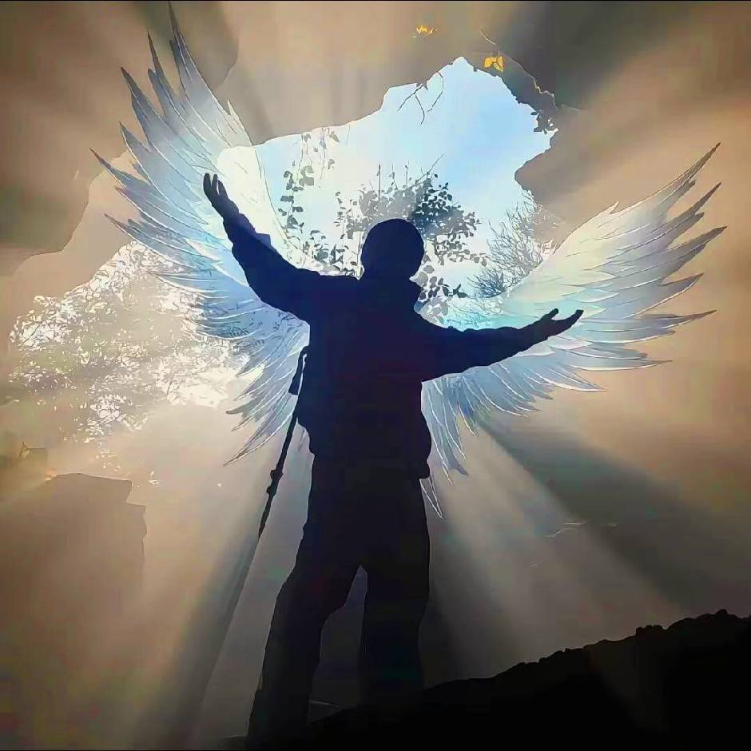

在孤独里长出的力量
我的童年，从小学三年级开始有了不一样的底色——被老师误解、“穿小鞋”的日子，一熬就是三年。那段时光里，孤独是常态：父母为了工作远走他乡，校园里没有并肩说话的伙伴，连课间喧闹的走廊，对我来说都像隔着一层透明的墙。
印象最深的一次，班级里丢了同学的文具，我莫名成了被怀疑的对象。面对一片质疑的目光，我没有哭，而是一点点说出自己的行踪、找同学帮忙作证，最后终于洗清了“小偷”的冤枉。可那次辩解后，我还是没等来朋友，大家依旧习惯性地和我保持距离。
就这样到了小学毕业，拍毕业照那天，我站在队伍边缘，最后拿到的照片里，却没有我的身影——像是那段被忽略的时光，连一张纸质的纪念都没留下。后来上了初中，偶尔听到同学说“真羡慕你能一个人自由待着”，可他们不知道，没人懂的自由，时间久了全是孤独。
也是从那时起，我开始在网络上找“事情做”，偶然接触到Python编程后，像找到了一扇新的门。从跟着教程敲第一行代码，到自己写小脚本解决问题，再到独立接项目，每一次进步都让我更踏实。现在的我，不仅能通过编程独立获得经济收入，还拿到了不少编程相关的证书，那些曾经独自熬过的日子，终于变成了支撑我的力量。
我的编程与安全证书
-
Python全栈开发工程师认证
证书持有者：朱悦嘉
-
-
NISP一级（国家信息安全水平考试）
证书持有者：朱悦嘉
-
CISP（注册信息安全专业人员）
证书持有者：朱悦嘉
-
CIPS-PTE（注册信息专业人员-渗透测试工程师）
证书持有者：朱悦嘉
-
CISSP（国际注册信息系统安全专家）
证书持有者：朱悦嘉
Python全栈开发
数据分析
信息安全（NISP/CISP）
渗透测试（CIPS-PTE）
国际安全认证（CISSP）
经济独立